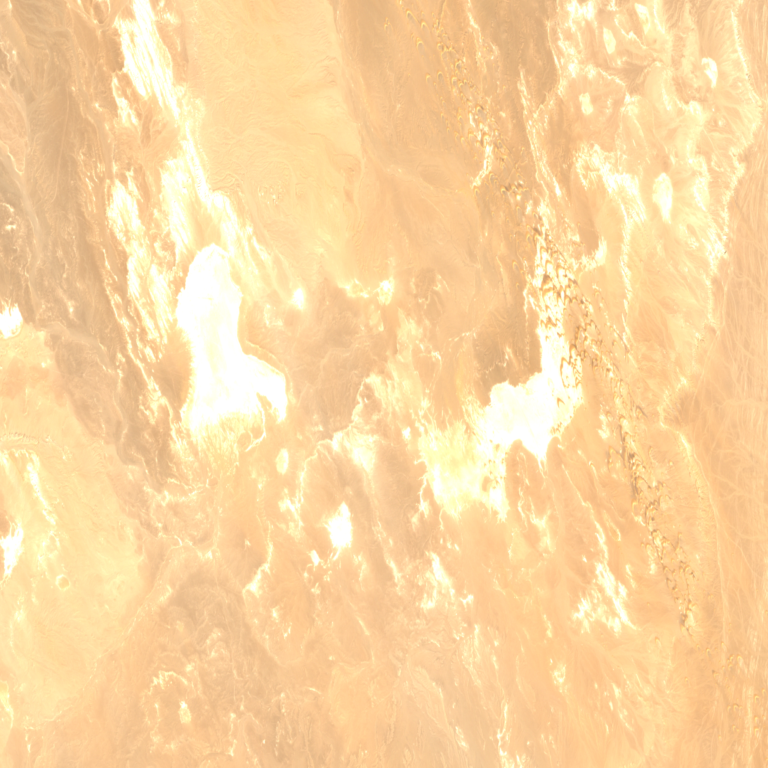
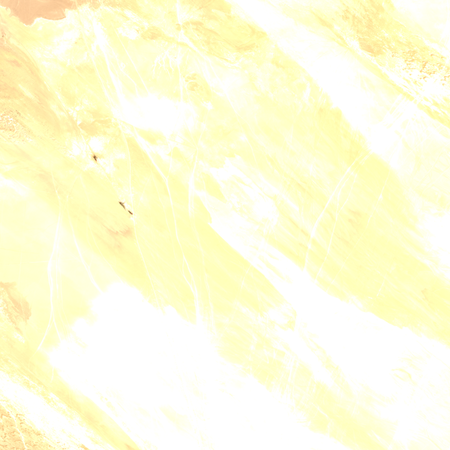
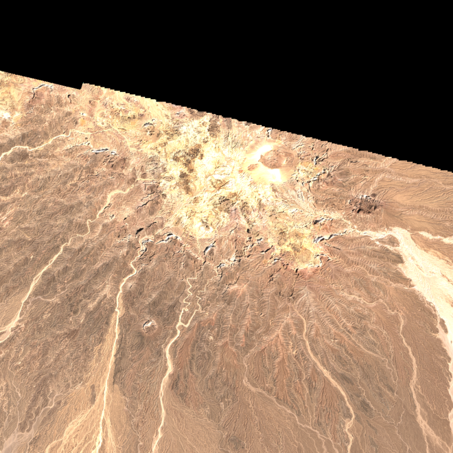
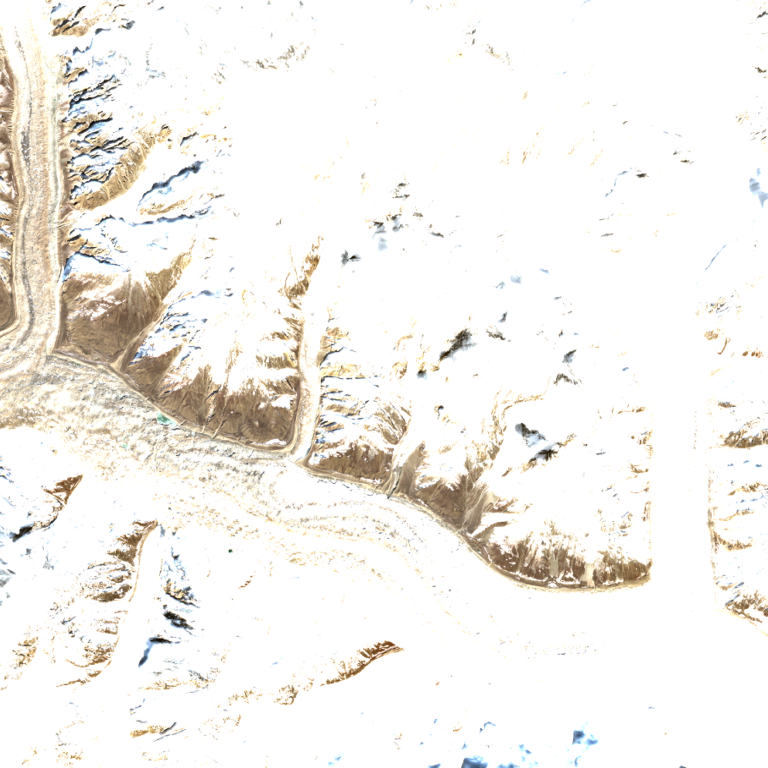

ANALOG-X helps mission teams answer a more useful question: which Earth experiments can prepare us for work on the Moon or Mars, what evidence supports that choice, and where does the comparison break?
Earth analog sites are valuable rehearsal grounds, but they are not always fully characterized. A visual match alone cannot tell a team which method transfers, what the data actually proves, or what still needs to be measured.
ANALOG-X connects Earth and planetary evidence to specific field tasks. Its ATFA framework shows what can be rehearsed, what cannot be transferred, and the next evidence needed.

Chagai playasSentinel-2 true-colour preview
Hamun-i-MashkelSentinel-2 true-colour preview
Koh-i-SultanSentinel-2 true-colour preview
Hispar GlacierSentinel-2 true-colour previewTemperature, humidity, wind, rainfall and solar climatology for all ten Earth study sites. Sentinel-2 L2A scene discovery adds dated satellite context across the site windows.
Ten existing Copernicus DEM areas are subdivided into overlapping 5.55 km windows at approximately 925 m support. A separate ~30 m Earth-only parent-area roughness summary preserves detail lost in aggregation; it does not enter the planetary score.
Local windows are compared with Shackleton LOLA and Nili Patera MOLA profiles. Diviner thermal summaries cover 6,823 lunar triangles (median 2 cm average: 103.786 K; annual max surface: 238.568 K).
MODIS browse previews are indexed for ten Earth sites. PDS observational product metadata is catalogued across six queries for planetary-data discovery.
We scan 7,290 Earth sub-windows and test how shortlist ranks react to 500 feature-weight draws. Candidates are sampled only inside ten pre-selected regions—not a global Earth scan.
MODIS JPEGs are visual previews, not calibrated temperature arrays. The 500 PDS catalogue records are metadata discovery, not 500 decoded science products. The matched planetary grid is ~925 m; the separate 30 m Earth DSM is parent-area context, not rover-scale hazard data.
ATFA changes the unit of comparison from an entire landscape to a named experiment or field method—and makes the limits visible.
ANALOG-X does not hide uncertainty behind one score. It tells researchers what a site may help test, what it cannot prove, and what data to collect next.
Field mineralogy and chemistry, ground-truth station campaigns, higher-resolution rover-scale terrain, authoritative lunar illumination / PSR analysis, cave environments and actual ISRU resource abundance are not established in this release.